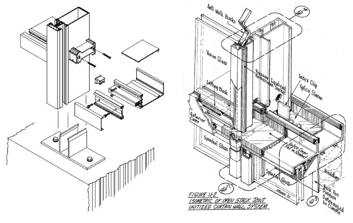

In this type of curtain wall system, the parts are already assembled in the factory. The components are installed and brought as a single unit from the factory to the site. This negates the need for individual installation. The size of the unitized curtain walls is directly proportional to the floor to floor height of the structure. Popular in high-rise buildings, they don’t need external supports such as cranes or scaffolding. Only mini cranes or temporary hoist are needed. This system offers the benefits of quick construction and good quality as the components are manufactured in a factory setting. However, this type of curtain wall system tends to increase the shipping charges due to need for larger and better protection during transportation to the site.
In this type of curtain wall system, the components are assembled piece by piece on the structure of the building. This system is mainly used for low-rise buildings or in small regions. This is due to the fact that for reaching higher elevations it is important to have exterior access. This system promises flexibility as it gives space for onsite adjustments. Though it has the advantage of low shipping costs, the labor and time consumption should not be underestimated as tend to run quite high.
In stick construction, the curtain wall frame is constructed mainly on site with mullions and transoms supporting glass, spandrel panels, metal panels and brise-soleils, connected piece by piece. Each mullion is usually supported by the floor or perimeter beams.
In unitised construction, on the other hand, the curtain wall is composed of large units that are assembled in the factory, shipped to the site and erected on the building. Aluminium profiles are used to form the frame, which is normally one-storey high. Opening vents, glazing and infill panels are built into units before being transported to site. As with stick construction, each unit is usually supported by the floor or perimeter beams.
Stick curtain walling systems are versatile and allow for the integration of other systems, such as sliding doors and windows. They tend to be less specialised and can be built by all types of fabricators as they are not dependent on having a large factory.
However, stick systems do require multiple steps to erect and seal the wall, which means more time is spent on site – an approximate rule of thumb would be that 70% of the work is carried out on site, with 30% in the factory. This incurs further costs, such as labourers’ time.
For unitised curtain walling, about 30% of the work is done on site, while 70% is carried out in the factory. The complete assembly of the units in the factory brings a number of benefits.
Another advantage of unitised systems is that, unlike stick systems, they do not transfer impact noises from floor to floor or horizontally from room to room. This is because the unitised panels are separated by linking gaskets. The different materials (ie, gasket to aluminium), become acoustically excited to different levels, thus creating full separation at the junctions between units.
The increased use of factory assembly introduces other important considerations.
Curtain wall specialists, be them consultants, system designers or facade contractors, use to have a clear opinion on when to go for a unitized vs. a stick curtain wall system in a given facade project. This is not the case with architects, much less with developers and other specialists: for them choosing one system over the other seems like a dark subject.
Is it that difficult? Not really. Based on my experience, the main drivers for selecting unitized vs. stick are these five:
Left: stick system with exploded transom ---- Right: exploded unitized system
In short: the number of reasons to go for a unitized facade is increasing as our projects tend to be larger, taller, more complex in geometry, and are installed in seismic areas. Adding to it that the quality is better and installation time overcomes erection costs, we will see more and more unitized facades in all parts of the world. A note for the Schücos, Wiconas, and Reynaers: learn from the large facade contractors and bring up efficient unitized systems before it's too late!
-Ignacio Fernández Solla
-POSTED BY RAUL B LEOPOLDO
#QA/QC:Quality Control and Quality Assurance